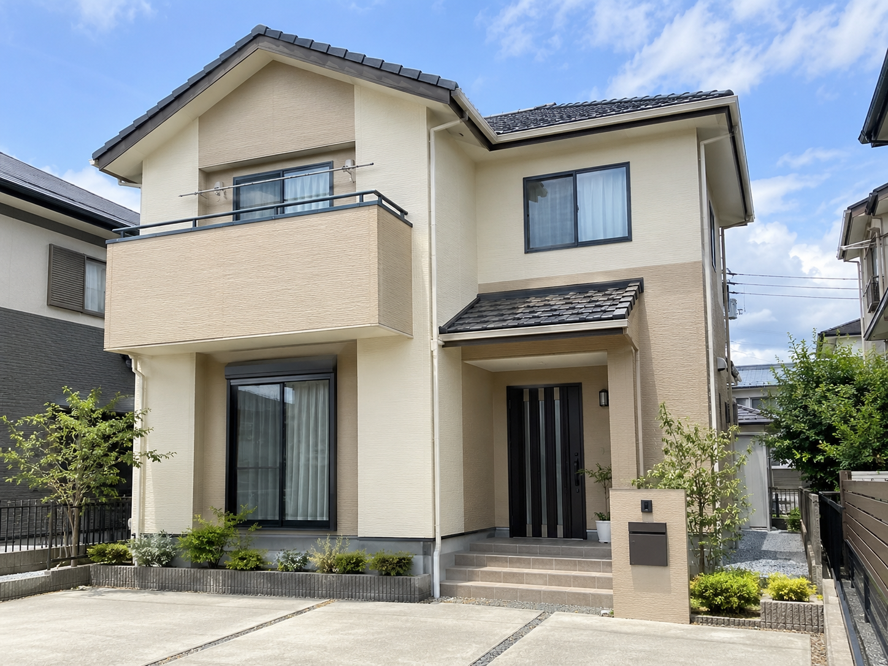
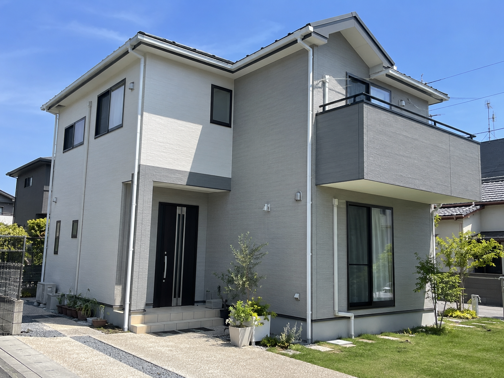

外壁・屋根塗装
袋井市 K様邸
色あせと防水性の低下が見られたため、外壁と屋根をまとめて塗り替え。落ち着いた印象に整えながら、住まい全体の保護性能も高めました。
仕上がりのポイント
重くなりすぎない上品な色合いで、屋根・外壁・付帯部の統一感を意識して仕上げました。
WORKS
塗装は完成した瞬間だけでなく、その後の年月まで考える仕事。杉山塗装が一軒一軒向き合った施工例をご紹介します。
CASE STUDY
建物の状態、立地、色のご希望を確認しながら最適な施工方法をご提案します。

色あせと防水性の低下が見られたため、外壁と屋根をまとめて塗り替え。落ち着いた印象に整えながら、住まい全体の保護性能も高めました。
重くなりすぎない上品な色合いで、屋根・外壁・付帯部の統一感を意識して仕上げました。

外壁のくすみや細かな劣化が気になり始めたタイミングで施工。明るさと清潔感を意識し、やさしい印象の外観に仕上げました。
外壁だけでなく雨樋や破風などの細部も色味を合わせ、住宅全体をすっきり見せています。
※本サイトおよび掲載施工事例はWeb制作練習用の架空設定です。
SERVICE
ひび割れ、色あせ、チョーキングなどを確認し、下地から丁寧に整えます。
紫外線や雨風を受ける屋根を保護。状態に応じて補修と塗装を行います。
雨樋、軒天、破風、雨戸など、住まいの細部まで仕上げます。